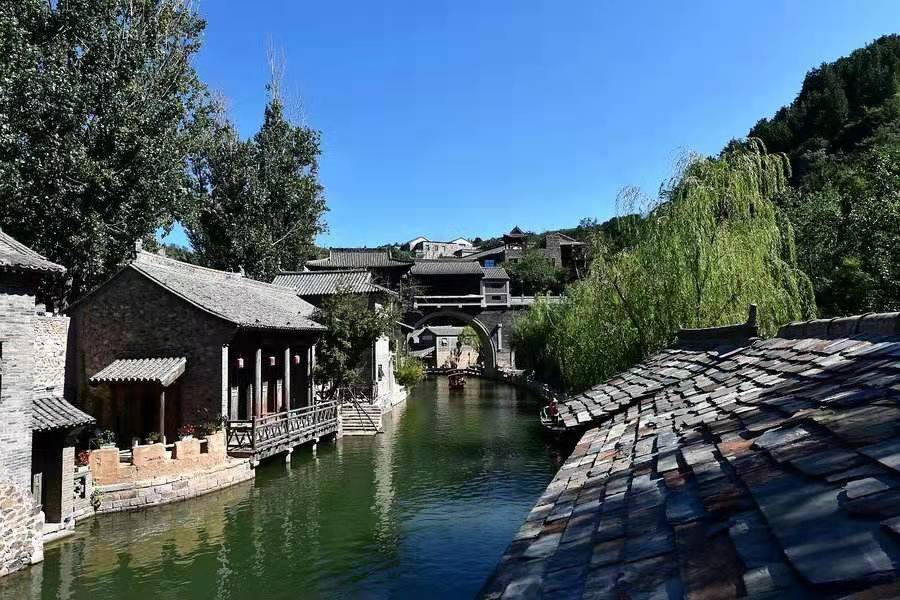

秋游古北水镇————2017年秋

在北京市密云县古北口镇，司马台长城脚下，有着类似乌镇的悠悠水乡。这里既有江南水乡的旖旎婉约，又不失民居的古朴素雅。这里就是古北水镇。去年“十一”长假期间，我有幸和妈妈到此一游。
初秋的京北已经有丝丝凉意，但节日里的古北口却热闹非凡。山路两边是一块块石砖垒起的城墙，排列得整整齐齐，像是饱经风霜的老人惬意地品读着光阴的故事；又像是倒流的时光机，引领者人们重拾岁月的痕迹。
走进古北水镇的大门，映入眼帘的是hi青石板的老街，悠长的胡同和两旁鳞次栉比的房屋，俨然一副北方民国时期的古镇风貌她图。男女老少赶集似的穿梭在窄窄的街上，流连于特色商铺之间：酒馆、染坊、镖局、灯笼店、烧饼铺，到处都散发出遥远岁月的芳香，到处展现着古朴文化的传统个性。我一会儿好奇地扯一扯用天然染料染成的画布，一会儿兴奋地推一推民国时期的独轮车，一会儿又把目光停留在造型独特的大鱼风筝上，，触摸着青灰的砖瓦，感受着年代的悠远，一切都是那么新奇，一切又是那么富有魅力。
水镇当然离不开水的陪伴。古北水镇里曲曲折折流淌着一条“天河”——汤河。汤河水系来自温泉，温泉是暖的，汤也是暖的，也许这就是汤河名字的由来吧。汤河水清澈见底，就像一面镜子能够映出天空的蓝，树木的绿，花儿的红。微风拂过，水面泛起粼粼波光，折射出正午阳光的温暖。我拿着相机，边走边拍，生怕错过任何一处美丽的景致。
水镇有各种各样的桥，大的，小的；圆圆的，有棱角的；有传说的，没传说的，不一而足。如果说河水是小镇的血脉，那桥就是水镇的经络。是桥把水镇各处贯通链接，使游客能够任意游走而不迷失方向；是桥为水镇自然分区，每个区域的风景各具特色，但又都和谐地融汇在一起；也正是桥，打破了水镇的单调，赋予水镇生气，成就一幅“小桥、流水、人家”的图画。
夜深了，我的兴奋劲儿依然没有减弱。夜幕下的古北水镇更加热闹了。酒馆里飘出清幽的酒香，街道上亮起各式各样的灯笼，汤河上泛起点点渔船。“不知乘月特色几人归，落月摇情满江树”。我仍穿梭于一道道门、一座座桥之间，继续探索着水镇的魅力，回味着水镇的古朴，思考着岁月的悠远，久久不愿离去。